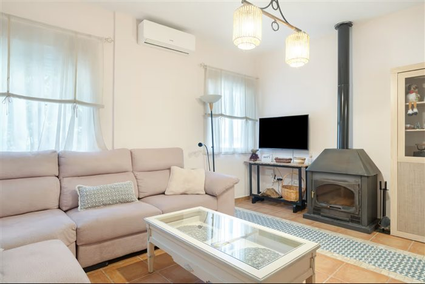
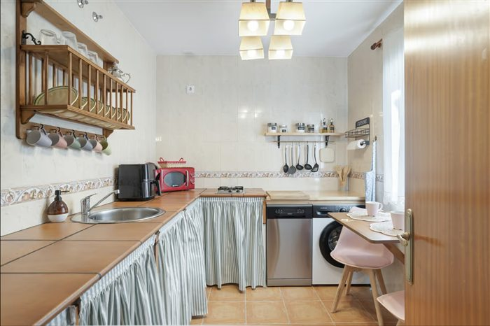
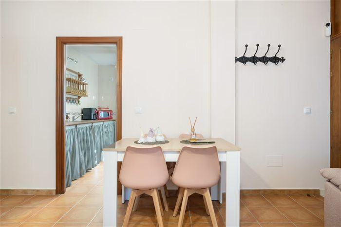
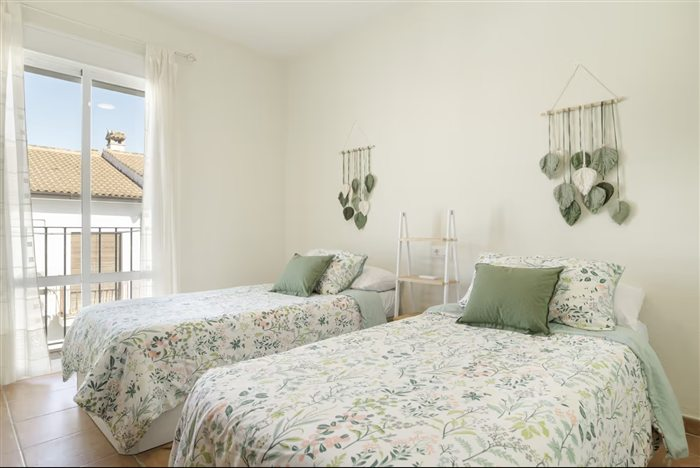
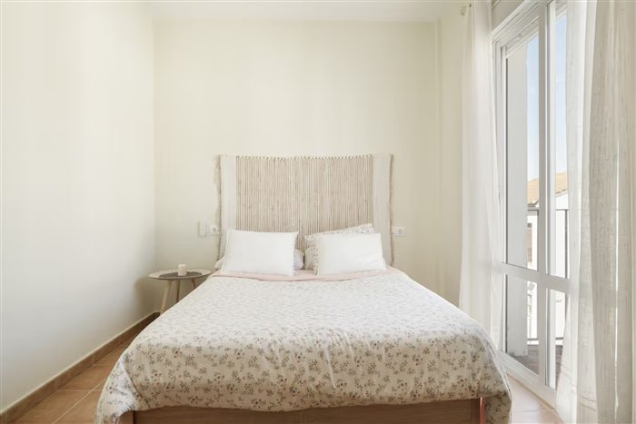
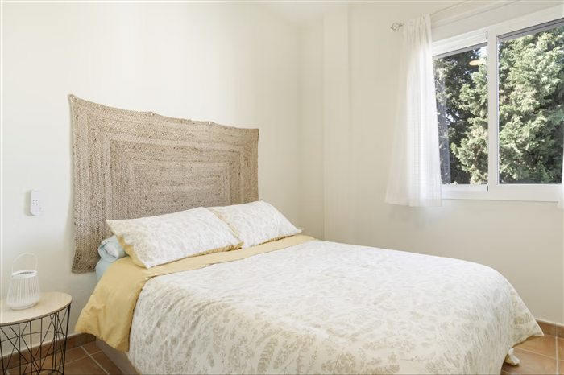
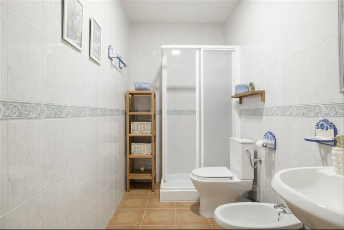

Seguir el Majaceite
El sendero del río une El Bosque y Benamahoma entre vegetación de ribera.
Consultar el senderoALOJAMIENTO RURAL · SIERRA DE CÁDIZ
El Bosque · Cádiz
Una casa para compartir días de pueblo,
en la Sierra de Grazalema.
01 / LA ESTANCIA
El Rincón de las Higueras es un alojamiento completo en El Bosque, Cádiz. Tres dormitorios y espacio para hasta seis personas: para venir en familia o reunir a ese grupo con el que siempre hay un viaje pendiente.
Prepara el desayuno, sal a conocer el pueblo y vuelve a una casa que compartís solo vosotros.
Los detalles de la casa
02 / UNA MIRADA A LA CASA
Un salón para hacer vida en común, cocina equipada y tres dormitorios para descansar.
2 dormitorios con cama de matrimonio
1 dormitorio con dos camas individuales
LA CASA / EN IMÁGENES
Del desayuno en la cocina al descanso en los dormitorios. Una mirada a los espacios que compartiréis.






03 / LOS DETALLES
Lo que encontrarás durante la estancia, según las fichas publicadas del alojamiento.
Confirma los servicios y las condiciones vigentes al reservar.
04 / EL BOSQUE, CÁDIZ
Un pueblo de la Sierra de Grazalema, el agua del Majaceite y la botánica de El Castillejo. Tres maneras de acercarte a este rincón de Cádiz.
El sendero del río une El Bosque y Benamahoma entre vegetación de ribera.
Consultar el senderoEl jardín botánico El Castillejo reúne flora del Parque Natural Sierra de Grazalema.
Conocer El CastillejoIlustraciones del entorno, no vistas desde el alojamiento. Consulta el estado de los senderos y los horarios antes de tu visita.
05 / NOS ENCONTRAMOS EN
El enlace muestra el municipio. Solicita al alojamiento la dirección exacta y las indicaciones de llegada con tu reserva.
06 / TU PRÓXIMA ESTANCIA
Consulta disponibilidad, precios y condiciones en las plataformas donde está anunciado el alojamiento.
La reserva se realiza directamente en la plataforma elegida.